×
Administration professional experienced in hospital administration, regulatory & licensing management, utility and bill management, vendor coordination, documentation, reporting, inventory and day-to-day office operations.
Administration professional with experience in hospital administration, regulatory & licensing management, utility and bill management, vendor coordination, documentation, reporting, inventory and day-to-day office operations.
Strong working knowledge of Microsoft Office, graphics design, hardware/software maintenance and digital tools. Also experienced in using AI tools to support research, documentation, analysis, presentations, communication and productivity.
A career journey across healthcare administration, office operations, data management and technology training.
Selected photographs are placed here to complement the career story without making the portfolio feel like a photo album.
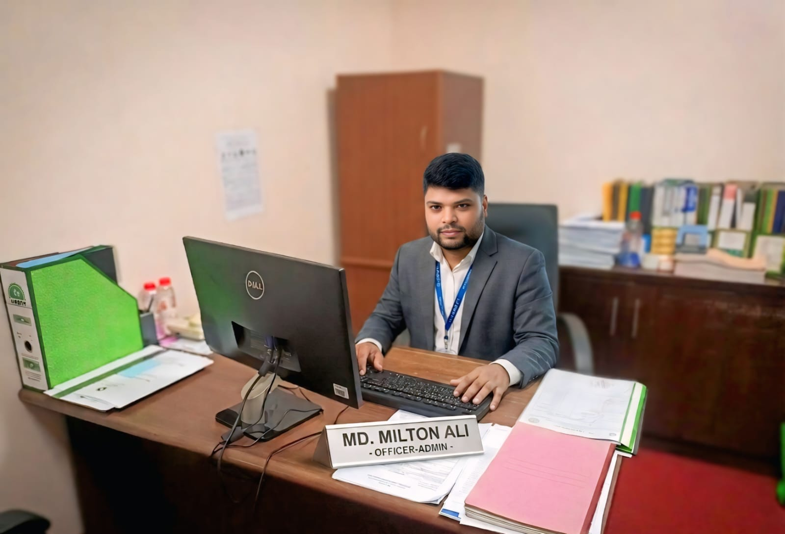
Professional workplace photography adds context to the portfolio and gives visitors a visual sense of the working environment.
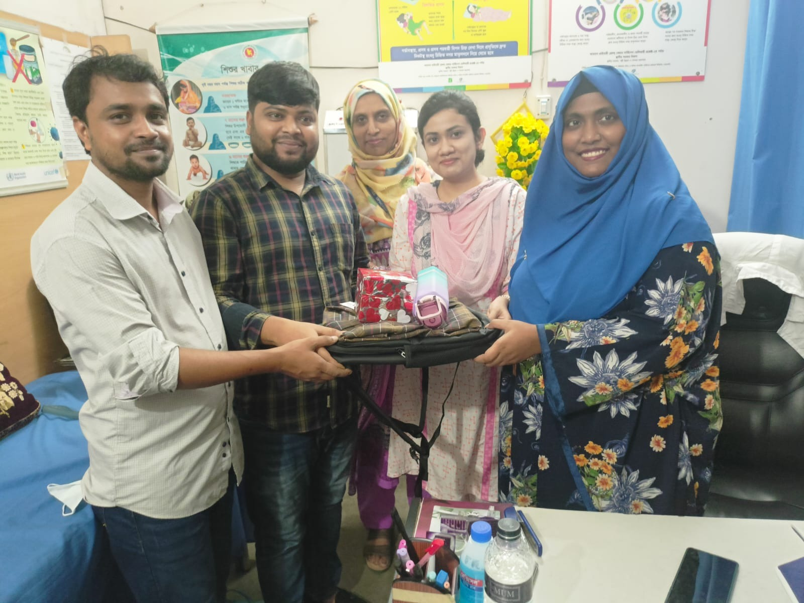
Selected team and event photographs help show the human side of professional work, collaboration and organizational activities.
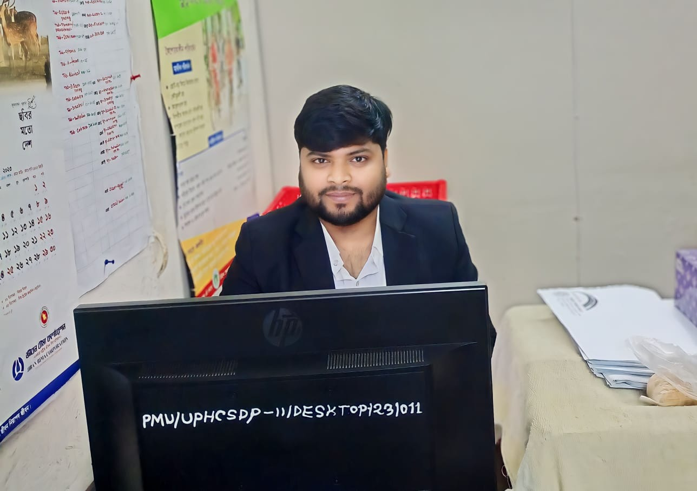
The portfolio combines professional identity with selected personal milestones while keeping the overall presentation polished.
Working knowledge of ChatGPT, Google Gemini, Grok and Claude AI for research, drafting, analysis, idea generation, reporting, presentations and productivity workflows.
Microsoft Word, Excel and PowerPoint for documentation, data handling, reporting and presentation preparation.
Adobe Photoshop and Adobe Illustrator for graphic design and visual content preparation.
Computer hardware/software maintenance, troubleshooting, internet browsing and effective use of online resources.
Additional photographs are kept here so the main portfolio remains clean and professional. Click any photo to view it larger.
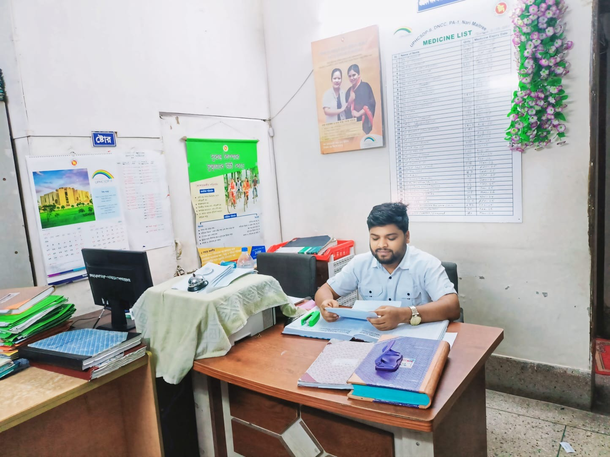
Professional Moment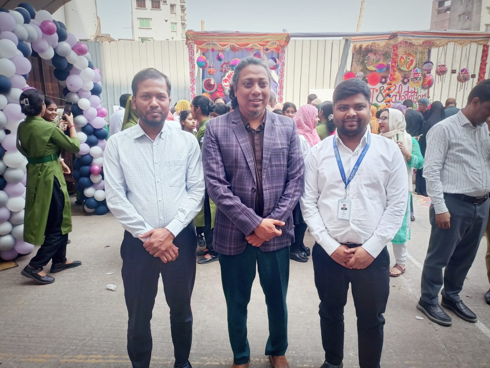
Professional Moment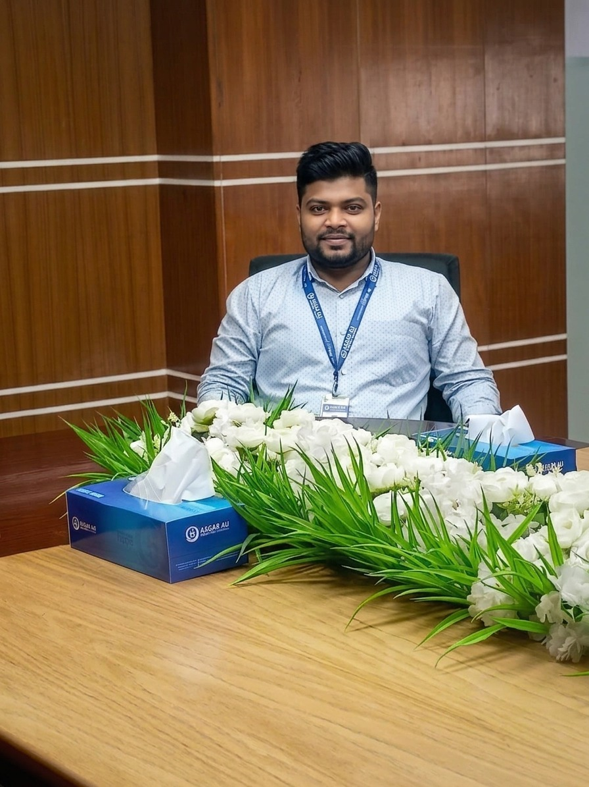
Team & Event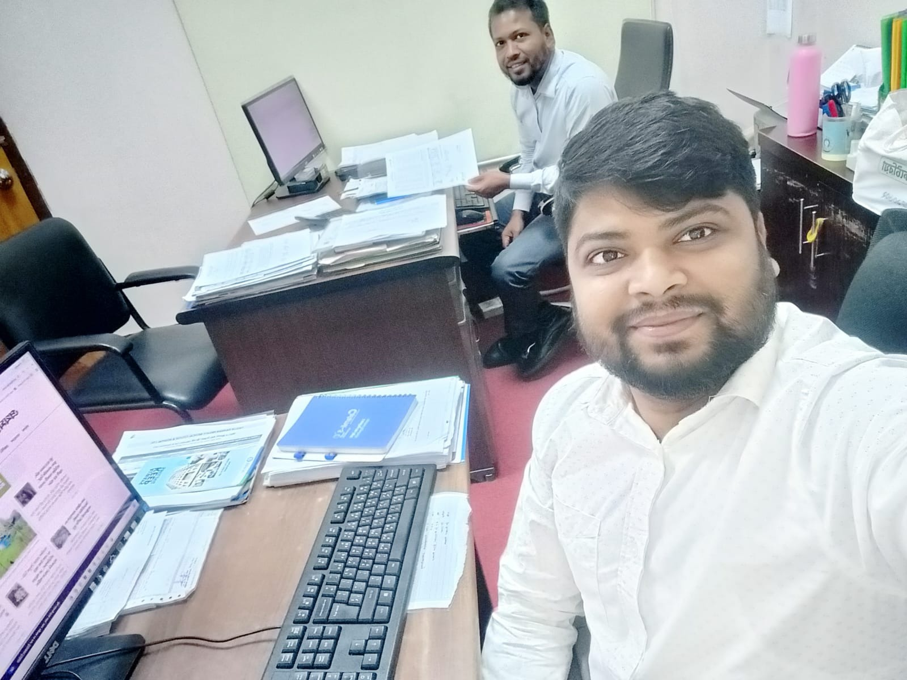
Workplace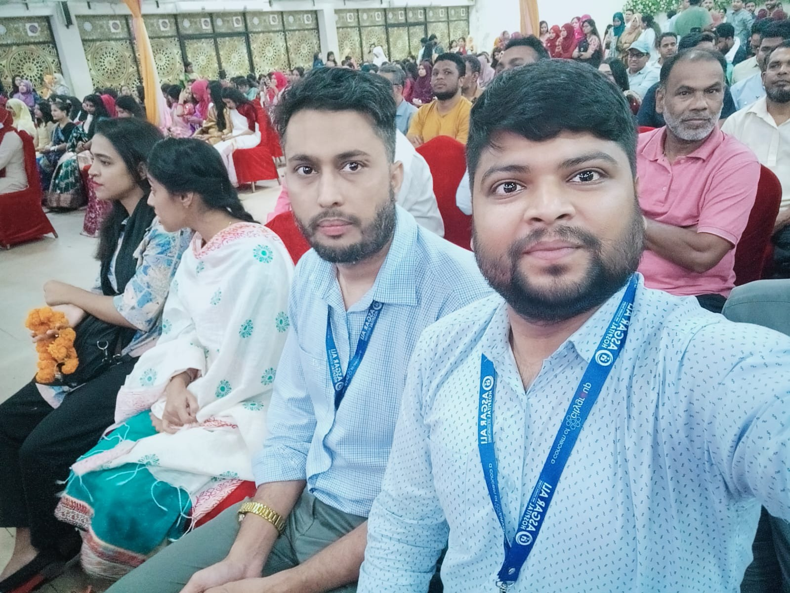
Personal Moment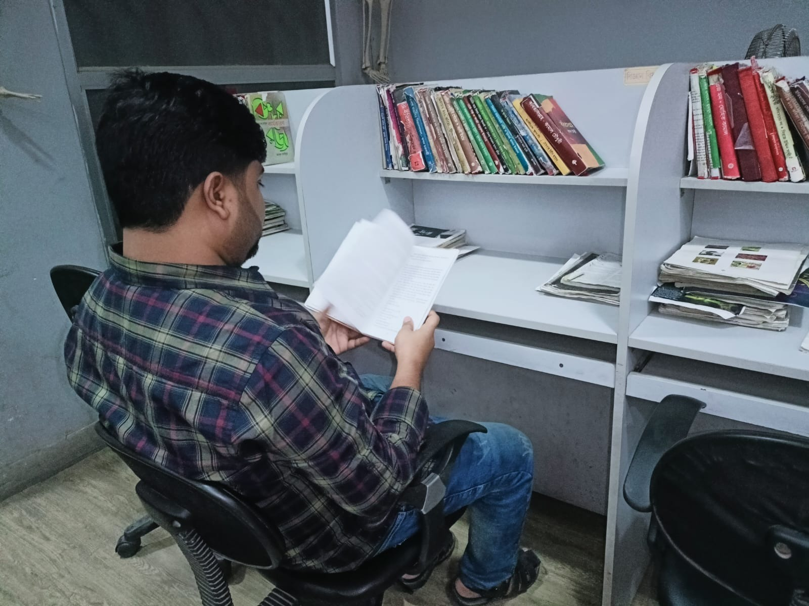
Professional Moment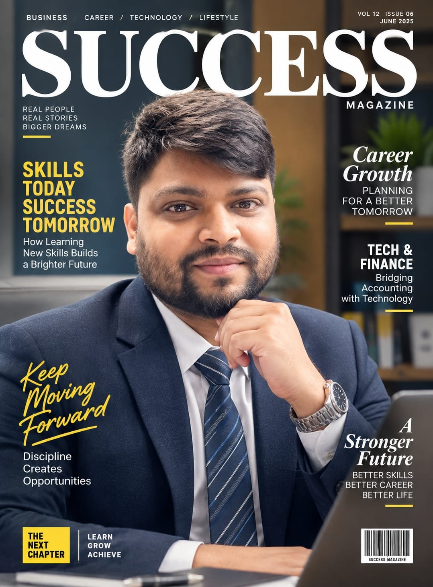
Professional Moment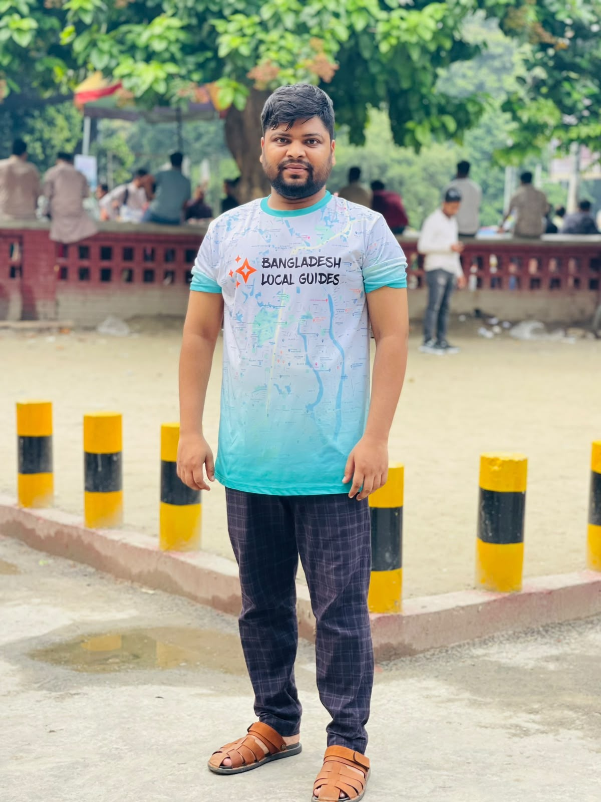
Personal Moment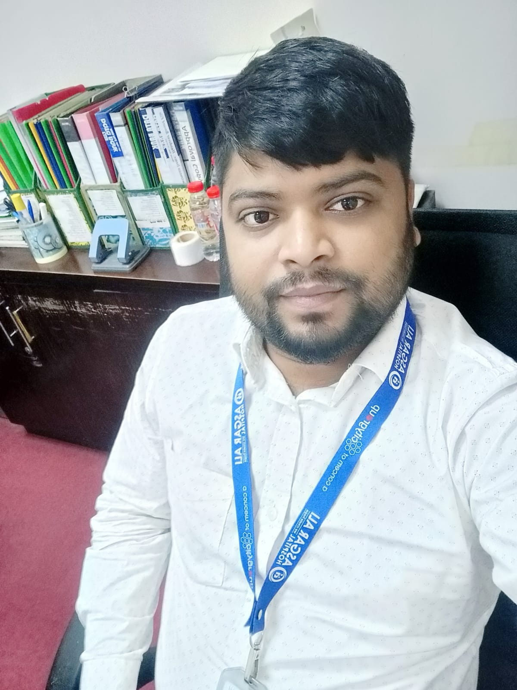
Workplace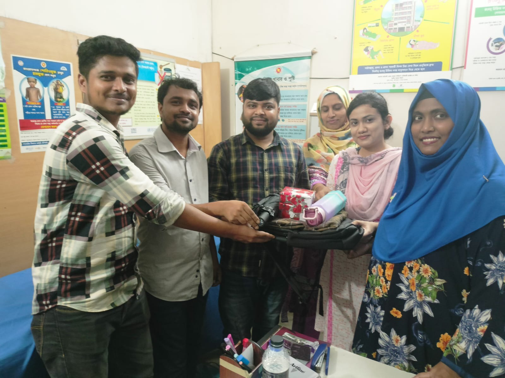
Professional Moment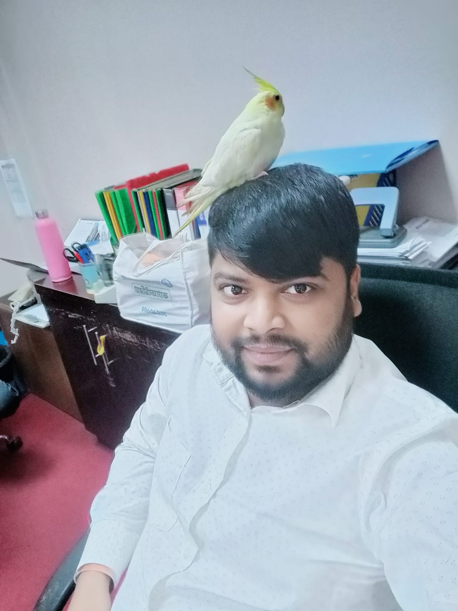
Professional MomentFor professional opportunities, administrative roles, collaboration or career-related communication, feel free to reach out.